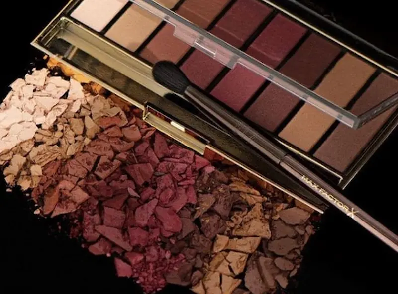

Palete și farduri populare de luat în considerare
Fardurile de pleoape pot evidenția privirea, pot accentua forma ochilor și pot completa armonios machiajul. Pe această pagină vei găsi informații despre palete populare, farduri cu texturi diferite și sfaturi utile pentru alegerea nuanțelor și a produselor potrivite pentru diferite tipuri de machiaj.
Găsește un specialist
Ghid și recenzii despre farduri de pleoape
Descoperă informații utile despre tipurile de farduri, alegerea nuanțelor, texturi și tehnici de aplicare. Pe măsură ce vor fi publicate, aici vei găsi și recenzii individuale ale unor palete și produse populare.
Tipuri de farduri
Diferențele dintre fardurile pudră, cremoase, lichide și palete.
Cum alegi nuanța potrivită
Sfaturi pentru alegerea culorilor în funcție de ochi, ten și tipul de machiaj.
Aplicare și tehnică
Cum să aplici și să estompezi fardurile pentru un machiaj uniform și bine definit.
Instrumente pentru machiajul ochilor
Pensule, aplicatoare și alte instrumente utile pentru aplicarea fardurilor.
Palete și farduri populare
Descoperă produse cunoscute și află ce caracteristici merită urmărite înainte de alegere.
Cum evaluăm produsele
Pigmentare, textură, estompare, rezistență, finisaj și versatilitate.


Tipuri, texturi și finisaje ale fardurilor de pleoape
Fardurile de pleoape sunt disponibile în mai multe texturi și finisaje, fiecare oferind un efect diferit și potrivindu-se unor tehnici de machiaj diferite. Alegerea poate depinde de tipul de machiaj dorit, de intensitatea culorii și de modul în care preferi să aplici produsul.
Pentru început, o paletă cu nuanțe neutre și câteva finisaje diferite poate fi o alegere versatilă. Dacă preferi machiajele mai intense, poți opta pentru palete care includ și nuanțe accent sau finisaje metalice.


Cum alegi fardurile de pleoape în funcție de culoarea ochilor
Alegerea nuanței poate porni de la culoarea irisului, dar nu există reguli stricte. Nuanțele complementare pot crea mai mult contrast și pot face culoarea ochilor să pară mai intensă, în timp ce nuanțele apropiate de culoarea irisului oferă un efect mai armonios.
Ține cont și de tonul pielii și de machiaj
Culoarea ochilor este doar unul dintre criterii. Tonul și subtonul pielii, intensitatea nuanței, culoarea hainelor și efectul dorit pot influența alegerea finală. Pentru machiajul de zi, nuanțele neutre și tranzițiile discrete sunt ușor de purtat, în timp ce pentru seară pot fi folosite culori mai intense, contraste mai puternice și finisaje luminoase.
Dacă nu ești sigură ce nuanță să alegi, începe cu o paletă care combină tonuri neutre, o nuanță mai închisă pentru profunzime și unul sau două finisaje luminoase. Astfel, vei putea crea mai multe tipuri de machiaj fără să ai nevoie de un număr mare de produse.


Cum se aplică fardurile de pleoape: tehnici de bază
Aplicarea fardurilor în mai multe etape ajută la obținerea unor tranziții uniforme și la definirea formei ochilor. Nu este nevoie de multe nuanțe: pentru un machiaj simplu pot fi suficiente două sau trei culori bine combinate.
Cum obții un machiaj de zi sau de seară
Pentru machiajul de zi, poți combina o nuanță neutră cu una de tranziție și un finisaj discret luminos. Pentru un look de seară, poți intensifica treptat colțul extern, adăuga un finisaj mai strălucitor și defini mai bine linia genelor.
Intensitatea este mai ușor de controlat atunci când aplici produsul în straturi subțiri și construiești culoarea treptat. Este preferabil să adaugi fard decât să aplici din prima o cantitate mare, mai ales în cazul nuanțelor foarte pigmentate.
Ai nevoie de machiaj profesional?
Dacă vrei să alegi tonul perfect sau să obții un machiaj profesional, consultă un make-up artist experimentat.
Vezi serviciile unui make-up artist

Sfaturi utile pentru un machiaj al ochilor reușit
Un machiaj reușit nu depinde de numărul de produse folosite, ci de alegerea potrivită a nuanțelor, aplicarea treptată și estomparea atentă. Cu câteva produse versatile și instrumentele potrivite, poți crea atât machiaje discrete pentru zi, cât și look-uri mai intense pentru seară.


Ce pensule și instrumente sunt utile pentru machiajul ochilor
Alegerea pensulei potrivite poate face aplicarea fardului mai ușoară și poate ajuta la obținerea unor tranziții mai uniforme între nuanțe. Nu este nevoie de un set mare: pentru un machiaj de zi, câteva pensule bine alese pot fi suficiente.
De ce ai nevoie pentru un machiaj simplu
Dacă ești la început, poți începe cu trei pensule: una plată pentru aplicarea culorii, una pufoasă pentru estompare și una mică pentru detalii. Pe măsură ce experimentezi cu tehnici diferite, poți adăuga pensule de precizie sau o pensulă unghiulară, în funcție de nevoile tale.
Indiferent de tipul pensulei, curățarea regulată este importantă. Reziduurile de fard pot amesteca nuanțele și pot afecta aplicarea următorului machiaj. O pensulă curată este deosebit de utilă atunci când lucrezi cu mai multe culori sau când vrei să estompezi fără să murdărești tranzițiile.
Palete de farduri și produse populare pentru machiajul ochilor
Paletele de farduri oferă posibilitatea de a combina mai multe nuanțe și finisaje, de la tonuri neutre pentru machiajul de zi până la culori mai intense pentru look-uri de seară. În această secțiune vei găsi câteva produse cunoscute și populare, prezentate ca puncte de pornire pentru alegerea unei palete potrivite stilului și preferințelor tale.
Recenzie independentă. Conținut nesponsorizat.
*Acest material este o recenzie editorială independentă și nu este
sponsorizat de producătorul sau distribuitorul produsului.
*Toate mărcile comerciale, numele de brand și denumirile de
produse aparțin deținătorilor de drepturi și sunt utilizate
exclusiv în scop informativ și editorial.
*Informațiile prezentate exprimă opinia autorului și nu constituie
o recomandare oficială din partea producătorului.
*Linkurile sunt incluse în scop informativ. În cazul unui
parteneriat de afiliere, aici poate fi plasat un link direct
către produs.

Cum evaluăm fardurile și paletele de pleoape
Pentru ca o recenzie să fie utilă, produsele trebuie analizate după criterii clare și relevante pentru utilizarea de zi cu zi. În evaluările individuale, urmărim atât caracteristicile produsului, cât și modul în care acestea influențează aplicarea și rezultatul final al machiajului.
Recenzii bazate pe experiență reală
Atunci când publicăm o recenzie individuală, concluziile despre aplicare, textură, pigmentare și rezistență trebuie să se bazeze pe experiența efectivă cu produsul sau pe informații clar documentate. Nu atribuim calificative sau scoruri produselor care nu au fost evaluate în mod real.
Produsele prezentate ca opțiuni de luat în considerare, dar care nu au încă o recenzie completă pe Estetica Lens, sunt marcate separat. În aceste cazuri, informațiile prezentate au rol orientativ și nu reprezintă o evaluare personală a produsului.
Întrebări frecvente despre fardurile de pleoape
Cum aleg nuanța fardului de pleoape?
Poți ține cont de culoarea ochilor, tonul și subtonul pielii, dar și de efectul dorit. Nuanțele deschise pot lumina machiajul, iar cele mai închise pot adăuga profunzime. Pentru un rezultat armonios, alege culori pe care le poți combina ușor și care se potrivesc stilului tău de machiaj.
De câte pensule am nevoie pentru aplicarea fardului?
Pentru un machiaj simplu sunt suficiente, de regulă, trei pensule: una plată pentru aplicarea culorii, una pufoasă pentru estompare și una mică pentru detalii. Pe măsură ce experimentezi cu tehnici diferite, poți adăuga pensule de precizie sau alte forme potrivite nevoilor tale.
Este necesar să folosesc primer înainte de fard?
Nu este obligatoriu pentru fiecare machiaj. Un primer pentru pleoape poate ajuta la uniformizarea suprafeței și poate contribui la menținerea machiajului, în funcție de produs și de tipul pleoapei. Dacă fardul se aplică uniform și rezistă suficient fără primer, acesta poate fi opțional.
Cum pot reduce căderea fardului sub ochi?
Aplică fardul în straturi subțiri și îndepărtează excesul de pe pensulă înainte de aplicare. La fardurile pudră, poți lucra mai întâi la machiajul ochilor și apoi la ten, dacă observi că particulele cad sub ochi. O pensulă potrivită și aplicarea controlată pot ajuta la reducerea excesului de produs.
Cum pot face machiajul ochilor mai expresiv?
Poți crea mai multă profunzime folosind o nuanță mai închisă în pliul pleoapei sau în colțul extern și poți adăuga o nuanță luminoasă în centrul pleoapei ori în colțul intern. Intensitatea poate fi construită treptat, în funcție de efectul dorit.
Cum folosesc fardurile de pleoape în siguranță?
Folosește numai produse destinate zonei ochilor, păstrează pensulele și recipientele curate și nu împărți produsele de machiaj cu alte persoane. Dacă apare iritație, întrerupe utilizarea produsului. Evită aplicarea machiajului dacă zona ochilor este inflamată sau prezintă o infecție. Aceste măsuri ajută la reducerea riscului de contaminare și iritație.